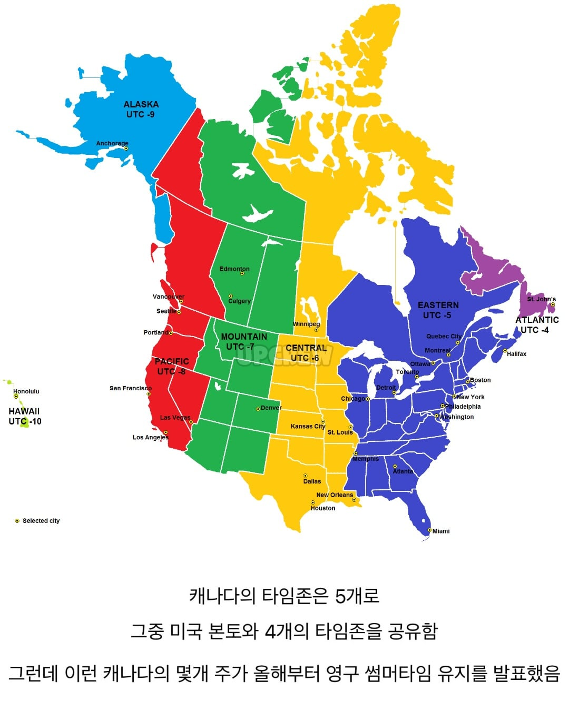
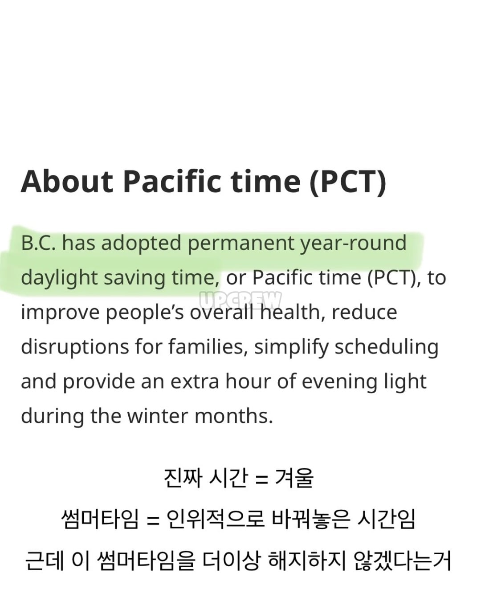
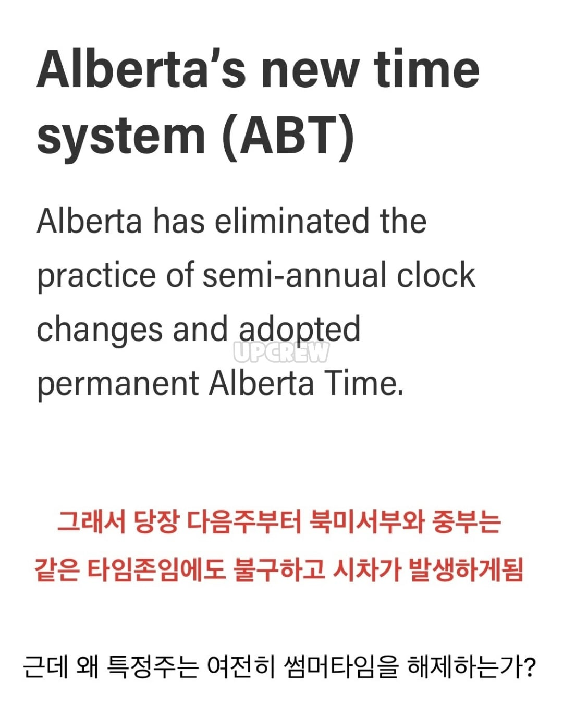
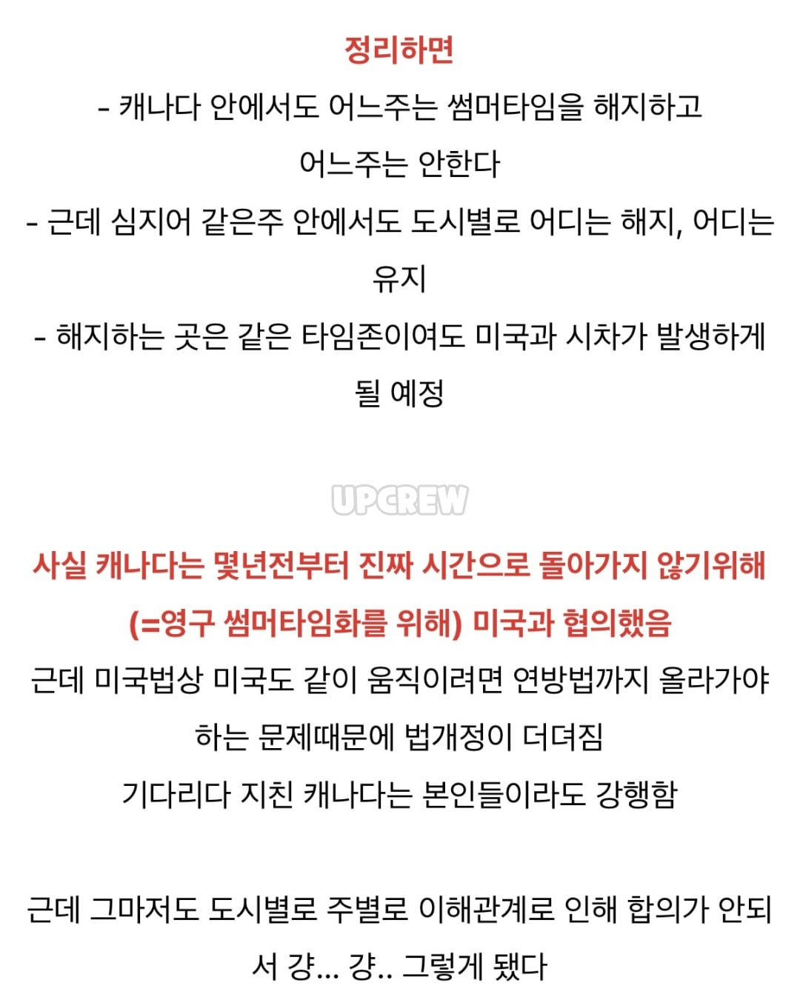

영구 업다
없애지 못하는 많은 정치적 이유가 있음
그리고서머타임 없으면 진짜 5-6시면 깜깜해짐
저기 극지방이랑 가까워서 한여름 피크때.10시에 해지고.그럼
도량형 불일치는 캐나다 종특
썸머타임 썸머타임 베이베
우리 함께한 이 여름 썸머타임
널 영원히 사랑해 알라뷰
나나나나 나나나 나나나 나나나 나나나나나나나
고위도 지역은 해가 짧아서 썸머타임이 꼭 필요한 건가?
사라져버린 섬광탄~
내가 캐나다 참 좋아하고 다시 돌아가서 살고 싶긴 한데 이런거 보면 ㅈㄴ 유사국가같기는 해
캐나다 참 여유롭고 푸틴, 팀홀튼이 그렇게 맛있다던데 어떰
티미 그냥 저렴한 던킨
푸틴 그레이비 올린 감튀 딱 그정도 근데 가끔생각남
토론토는 다운타운에 노숙자들도 많고 길거리에서 대마도 피움 가끔 총기사건일어나고 인도인 개많음
원래 코로나 전부터 워셍턴 캘리랑 같이 준비하던거였음
썸머타임은 개인이 시계보기 힘들때나 유의미한거 아님?
이거 PSAT로 나오기 딱 좋은 문제인데? ㅋㅋ
전체 시간대가 동일한 중국과 정 반대네
이변신같은 섬머타임은 왜하는지 개좆같음
올때마다 잠 한시간 덜자고 땡기고 11월에는 한시간 미뤄지고
개귀찮음
3월이 지옥임 그나마 밀릴때는 해만 빨리지는거임.
썸머타임을 없애야지 뭔 영구 썸머타임 ㅇㅈㄹ ㅋㅋ 개웃기네
시간은 시계에 보이는 숫자일 뿐이고 해뜨면 알아서 깨는데
키미노토리코니낫테시마에바킷토
서머타임을 없애라고
할거면 다하고 말거면 말아야지 개판이네 ㅋㅋㅋㅋㅋ
썸머타임 골때리긴 함
낮이 길어지는 효과가 있어서 사람들이 썸머타임을 선호하긴 함. 썸머타임쪽으로 통일하는 이유.
좆병신같은 지멋대로 정책은 양놈특인가
겨울에 써머타임 해제되면 진짜 해 존나빨리져서 차라리 영구서머타임이 남
우리동네는 써머타임 없으면 11월엔 해가 오후 5시에 지고 한겨울엔 4시에 짐. 써머타임 있으면 5-6시에 짐. 그래서 썸머타임으로 고정헸으면 좋겠음 나도
병신들인가


근데 기분탓인가? 미국 살아보니 써머타임 없는거 상상하면 ㄹㅇ 아침 7~8시인데도 존나 깜깜하던지 밤 9시 인데도 해떠있던지 이럴거 같음. 해 길이가 내 상식 벗어날까말까 할때 써머타임이 한번 기강 잡아줌 ㅋㅋㅋㅋ
어? 그럼 진짜로
위도상으로
10시 11시 10시
10시 9시 11시
이런경우도 날수도 있겠는데;
주별로 다른 건 미국/캐나다 사회 구조상 이해할 수 있는데 도시별로는 이상한데...
주정부가 그 정도 권한이 없나? 아니면 도시 맘대로 하라고 놔줬나
미국도 인디애나 왼쪽끝은 시카고 생활권에 맞춰서 중부시간씀 (나머진는 동부)
그렇군
나 사는 주는 전부 동부 시간대로 통일이라... 몰랐음
존니 예전부터 별도 티임존 쓰는 몇볓 지역 있았음
그냥 군대처럼 동절기에는 30분 늦게 시작하라고
병신제도 goat 걍 알아서 한시간씩 늦춰살면되는거아닌가??
매일매일이 여름이었다
드디어 늦게 일어나서 거래할 수 있구나
근데 우리나리도 강제로 30분 빠르게 살고있잖아
참고로 써머타임이라 하면 외국애들은 못알아듣는다. 써머타임은 한국인들이 만든 한국말임. Daylight saving time 이라고 해야 알아들음
야이 바보양
서머타임(Summer time)은 영국식 영어이고 데이라잇 세이빙 타임(Daylight saving time)은 미국식 영어, 캐나다 영어의 번역이다.
나도 몰랏네 근데 데이라잇 세이빙 타임은 주로 북미에서 많이 쓰니깐ㅋㅋㅋㅋㅋ 한국말인줄암 여기애들 썸머타임이라고 하면 뭐 여름이냐고 하길레
미국도 영구 서머타임 해줘야 미장하기 편한데
밝으면 활동하고 어두우면 자야지
왜 행성 단위의 움직임을 있으나 마나 무의미한 초침과 분침에 억지로 맞추려 드는지
아 뻐킹 온타리오랑 퀘벡은 또 따로 노네.....겨울 겁나 기니까 우리도 쫌 고정시키자 새끼들아..어제 눈떴는데 7시반이어야하는데 8시반이어서 얼마나 놀랐는줄 아냐?....
히히 아무 영향 없지롱~~ 뉴욕 증시나 미국이랑 무역하는 업자들은 상관있겠지만, 여기서 유학하는 학생 1 입장에서는 섬머타임 끝나는지 안 끝나는지도 모름. 걍 핸드폰이 알아서 1시간 점프해줘서 신경 안 쓰고 살아도 됨.
그냥 썸머타임을 없애지 뭔 영구 썸머타임이여 씨벌럼들